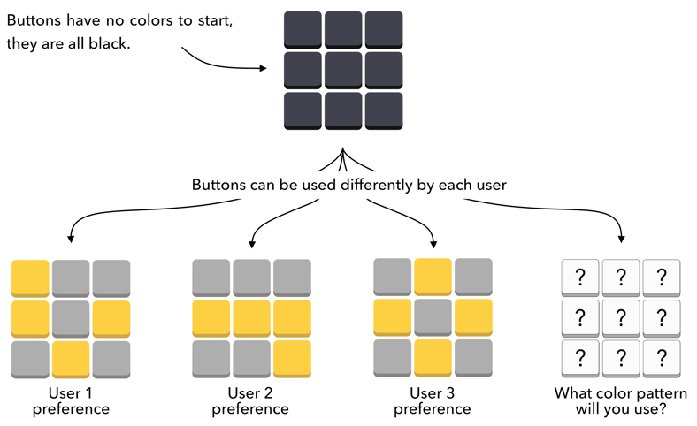

IFTT-PIN is a self-calibrating version of the PIN-entry method introduced in Roth et al. (2004) In digits are split into two sets and assigned a color respectively. To communicate their digit, users press the same button with the same color that is assigned to their digit. Users are free to choose which button to use for each color. Different versions of IFTTT-PIN can be tested at https://jgrizou.github.io/IFTT-Pin/ and a video introduction at https://://youtu.be/5I1ibPJdLHM.
Using self-calibration, they allow users to control a machine using their preferred action-to-meaning mapping without knowing it in advance. They call the method IFTT-PIN, which stands for ‘If This Then PIN’, because it makes extensive use of simple ‘if This Then That’ reasoning. All interactive demos are available online with links provided in section 2.3 and 3.3. They present the implementation of the PIN-Entry method from Roth et al. in, which makes use of two colored buttons to selectively refine the user password via elimination process.
IFTT-PIN adds self-calibration to this interface, and thus removes colors from the buttons. The user decides the color of each button in their mind and uses them as such never explicitly telling the machine about it. The process is illustrated in Figure 3 after one, four, and eight clicks from a typical interaction. With the number of buttons from 2 to 9, they have 510 valid color combinations. With 2 buttons only be yellow-gray or gray-yellow are possible. With N=9, they need to remove the two cases when all buttons are of the same color (all gray or all yellow)
If the user was entering digit 0 and 2, they would have used the middle button to mean alternatively yellow and grey, which would be a breach of the consistency assumption. The middle button would be yellow if the user was typing a 1, and grey if they were typing a 3. After fthe clicks, both options remain consistent at this stage. Only digit 3 remains fully consistent, thus they can conclude that the user is trying to enter the digit 3. IFTT-PIN can be demonstrated live and interactively in less than 3 minutes.
IFTT-PIN allows users to enter the PIN of their choice via an elimination process by indicating the color of their digit (yellow or grey) To express their choice, users click on a button whose color is the same as their digit. buttons do not have any color assigned to them at the start of the interaction. Users are free to define each button in their mind and use them as such without informing the interface. After a few iterations, the interface can infer both the digit the user had in mind and each button used. This work was submitted as a demo to UIST 2021 and not accepted.
I. Iturrate, J. Grizou, L. Montesano, P.-Y. Oudeyer, and M. Lopes, “Interactive learning from unlabeled instructions,” in Proceedings of the Thirtieth Conference on Uncertainty in Artificial Intelligence, Arlington,.Virginia, USA, in Jul. 2014, pp. 290–299. The researchers say they are exploring task constraints for self-calibrated Brain-Machine Interface Control using Error-Related Potentials.